🔍
No projects match your filters.
Try clearing a filter or searching a different term.
 View on GitHub ↗
View on GitHub ↗
Exploratory Data Analysis - E-Commerce Dataset
An in-depth EDA of the Olist Brazilian e-commerce dataset, uncovering key drivers of customer reviews, delivery performance, and revenue trends.
EDA
pandasnumpymatplotlibseaborn
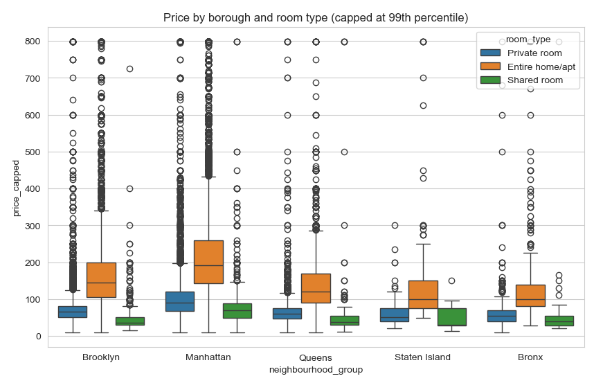
View on GitHub ↗
Exploratory Data Analysis - NYC Airbnb Open Data
An EDA of NYC Airbnb listings combining price outlier analysis, geospatial mapping, and host behaviour clustering to uncover what drives pricing across the city.
EDA
Clustering
Regression
pandasnumpymatplotlibseabornfoliumscikit-learn
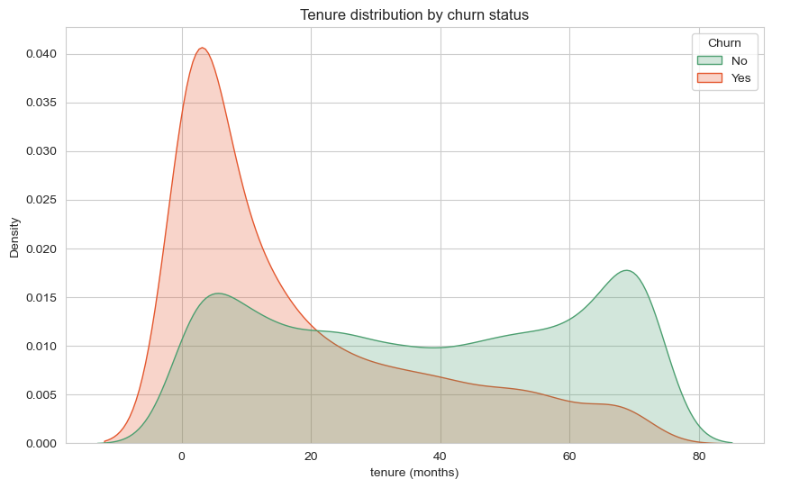
View on GitHub ↗
Exploratory Data Analysis - Telco Customer Churn
An EDA of the Telco Customer Churn dataset uncovering the contract types, tenure patterns, and pricing behaviours that most strongly drive customer churn.
Supervised Learning
Classification
EDA
pandasnumpymatplotlibseaborn
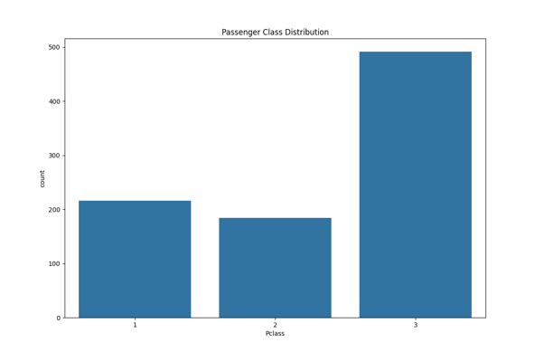
View on GitHub ↗
Exploratory Data Analysis - Titanic Dataset
This is a Python project that explores the famous Titanic Dataset.
Supervised Learning
Classification
EDA
pandasnumpymatplotlibscikit-learn
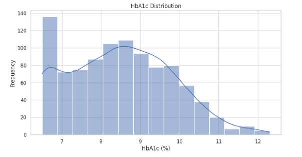
View on GitHub ↗
Pharmatech Python Project
This is a Python project around PharmaTech who aims to create a Predictive model.
Supervised Learning
Predictive Modeling
pandasnumpyscikit-learn
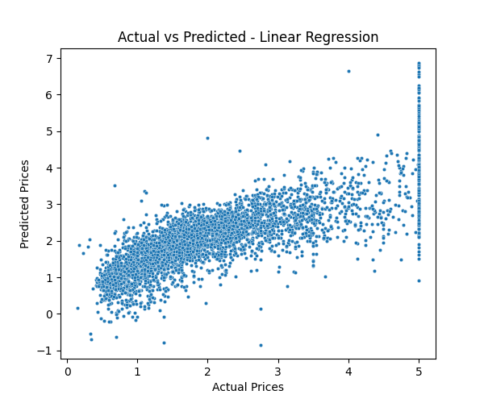
View on GitHub ↗
California Housing ML
This is just a small Python code to simplyfy using multiple ML algorithms on a basic dataset with some useful visuals to interpret the models performance against each other.
Supervised Learning
Regression
pandasscikit-learnmatplotlib
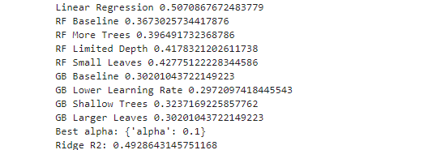
View on GitHub ↗
Diabetes Regression ML
A regression project comparing Linear Regression, Random Forest, Gradient Boosting, and Ridge models on scikit-learn's diabetes dataset to predict disease progression, finding that plain Linear Regression performs best due to the dataset's largely linear signal.
Supervised Learning
Regression
pandasnumpyscikit-learnmatplotlib
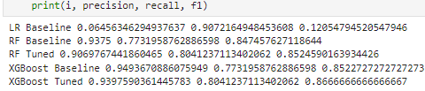
View on GitHub ↗
Credit Card Fraud Classification ML
Binary classification project detecting fraudulent credit card transactions from anonymized PCA-transformed features, comparing tuned Logistic Regression, Random Forest, and XGBoost models under severe class imbalance (~0.17% fraud).
Supervised Learning
Classification
Imbalanced Data
pandasscikit-learnxgboost
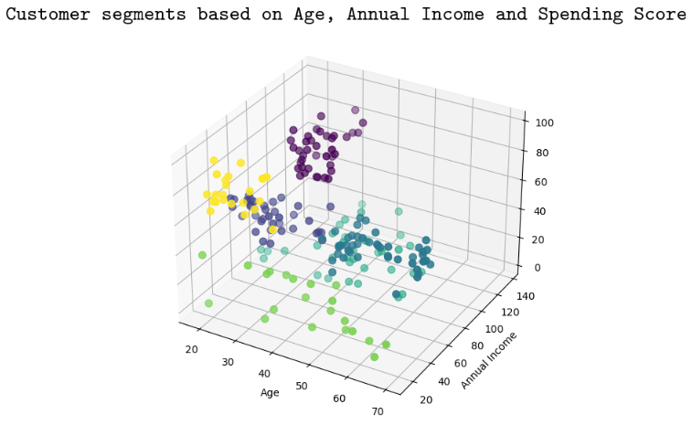
View on GitHub ↗
Customer Segmentation using K-Means Clustering
This project uses K-Means clustering on mall customer data to segment shoppers into distinct groups based on age, annual income, and spending score, using the elbow method to determine the optimal number of clusters and visualizing the resulting segments in 2D and 3D scatter plots.
Unsupervised Learning
Clustering
pandasscikit-learnmatplotlibseaborn
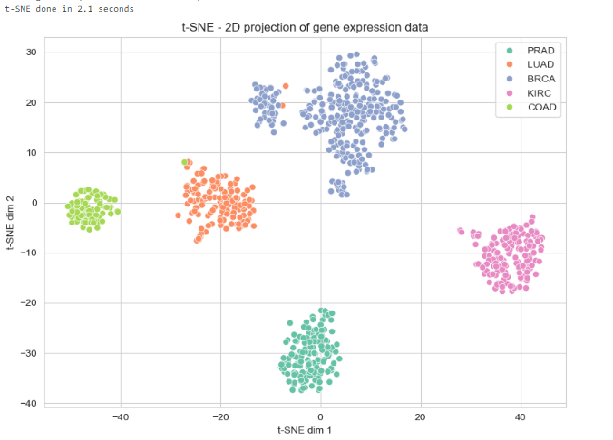
View on GitHub ↗
Gene Expression Cancer RNA-Seq Dimensionality Reduction
This project applies PCA, t-SNE, and UMAP to a 20,000+ gene RNA-Seq dataset to visualize cancer subtype clusters and compares classifier performance on raw versus PCA-reduced features.
Unsupervised Learning
Supervised Learning
Classification
pandasnumpyscikit-learnumap-learnmatplotlibseaborn
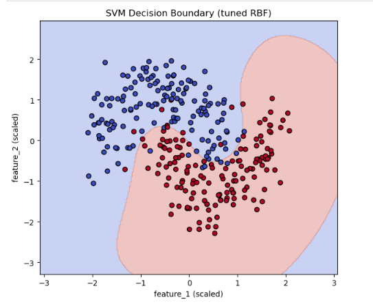
View on GitHub ↗
Support Vector Machine Classification
A binary classification project comparing linear and RBF-kernel Support Vector Machines on a non-linearly separable dataset, using grid search to tune hyperparameters and visualizing the resulting decision boundary.
Supervised Learning
Classification
pandasnumpyscikit-learnmatplotlib
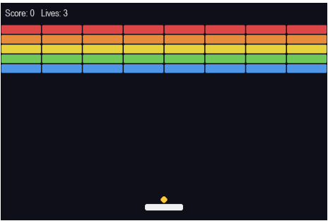
View on GitHub ↗
Breakout Reinforced Learning ML
A reinforcement learning agent (PPO) learns to play a custom-built Breakout clone purely through trial and error, improving from random flailing to reliably clearing bricks.
Reinforcement Learning
gymnasiumstable-baselines3pytorchpygame